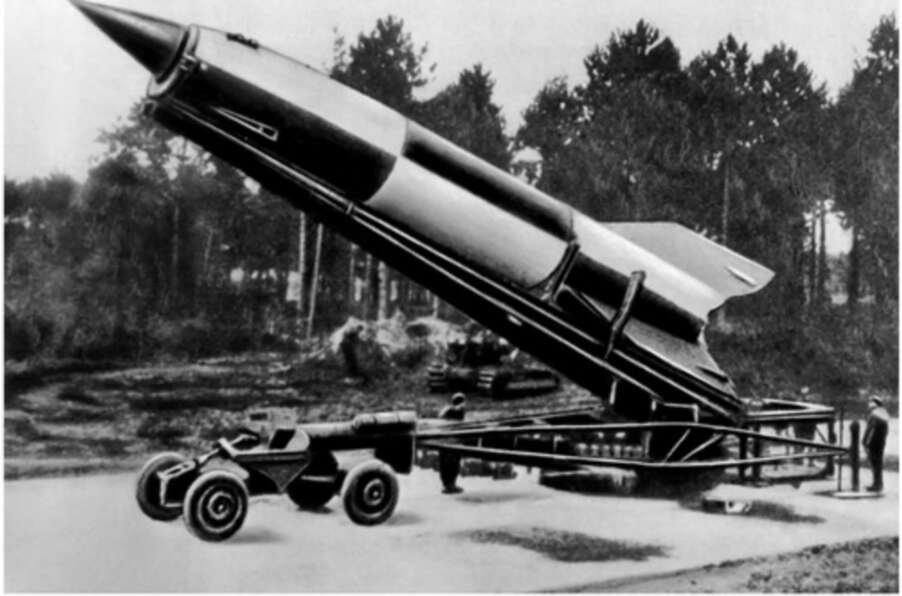

artillery pieces, rifles and bombs. 33. German V-2 rocket ready to launch. It didn’t defeat the Allies, but it kept the Germans hoping for a technological miracle until the very last days of the war. Science played an even larger role in World War Two. By late 1944 Germany was losing the war and defeat was imminent. A year earlier, the Germans’ allies, the Italians, had toppled Mussolini and surrendered to the Allies. But Germany kept fighting on, even though the British, American and Soviet armies were closing in. One reason German soldiers and civilians thought not all was lost was that they believed German scientists were about to turn the tide with so-called miracle weapons such as the V-2 rocket and jet-powered aircraft. While the Germans were working on rockets and jets, the American Manhattan Project successfully developed atomic bombs. By the time the bomb was ready, in early August 1945, Germany had _ already surrendered, but Japan was fighting on. American forces were poised to invade its home islands. The Japanese vowed to resist the invasion and fight to the death, and there was every reason to believe that it was no idle threat. American generals told President Harry S. Truman that an invasion of Japan would cost the lives of a million American soldiers and
